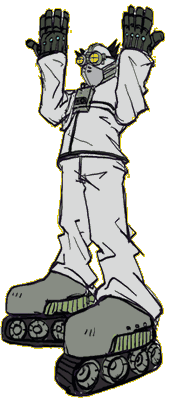

Welcome to Jet Grind Radio Hints & Tips. Jet Grind Hints Are you stuck in Tokyo-to? Having trouble moving on to that next level? Read these hints over and hopefully they'll get you going further into the bowels of this city under siege! Jet Grind Artwork How to create and upload your artwork for use in Jet Grind Radio. JGR Manual Corrections Oops! Minor corrections to the game manual. Dream Key Browser How to use the Dream Key browser. |
 |